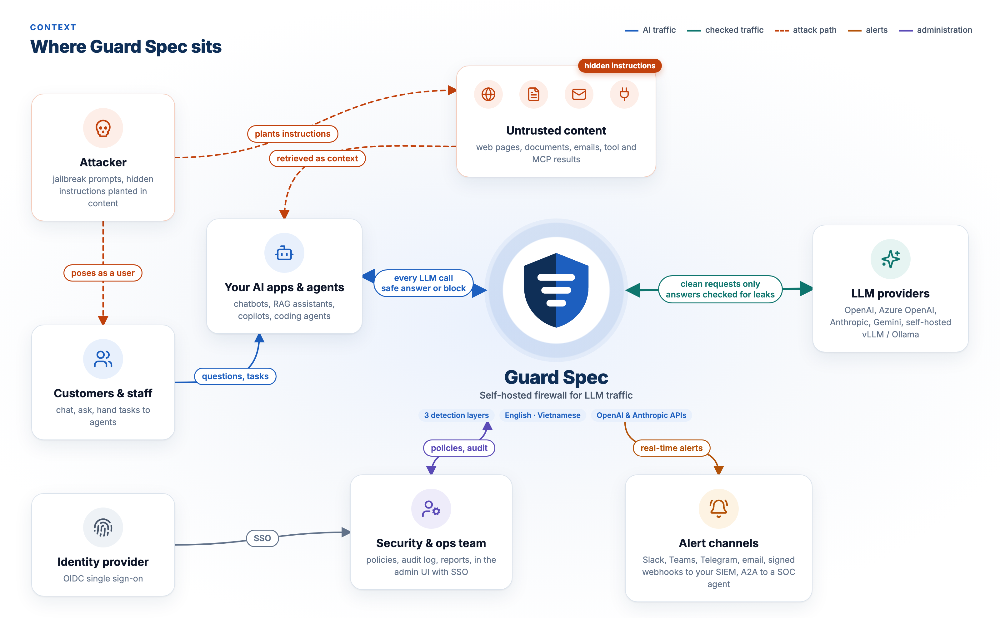

Guard Spec is a gateway between your apps and any OpenAI-compatible API. It checks prompts, retrieved documents, tool results and MCP tools on the way in, and the model's answer on the way out. Prompts never leave your network.
from openai import OpenAI
client = OpenAI(
# was https://api.openai.com/v1
base_url="http://guard-spec:8080/v1",
api_key=GUARD_SPEC_KEY,
)
# the rest of your code stays the sameHTTP 400
{"error": {
"code": "content_filter",
"message": "Request blocked: prompt
injection detected."}}
# the LLM is never calledChatbots, RAG assistants and agents pass user input, web pages, documents and tool output straight into the model. Any of them can carry instructions that override yours.
A user types “ignore your previous instructions” in a hundred disguises: leetspeak, homoglyphs, Vietnamese teencode, text without diacritics.
A web page, email or PDF in your knowledge base hides an instruction in invisible HTML, Unicode tag characters or bidi tricks.
An MCP server describes a tool with hidden steps that tell your agent to read secrets and send them elsewhere.
Point your SDK's base URL at Guard Spec. Every request is sanitized, scored by three detection layers and checked against your policies. Clean requests go on; injections get a 400 and an alert.

Strips invisible characters, Unicode tags and bidi overrides; flags anomalies.
Fast pattern rules that see through diacritics, teencode, leetspeak and homoglyphs.
Our own ONNX model, trained for English and Vietnamese, running in process.
Embedding match against known attack exemplars you can add to.
Per-organization rules compiled to CEL: allow, block, log or route.
Catches exfiltration links, personal data and a leaked canary, also when streaming.
Rules, a classifier and similarity search are fused into one score with a clear threshold. Run rules only, or all three.
Built and evaluated for both, including Vietnamese with and without diacritics, teencode and leetspeak.
Runs in your network. No prompt goes to a third-party moderation API. Every rule is readable and editable.
Change one base URL. Route to OpenAI, Azure OpenAI, Anthropic, Gemini, vLLM or Ollama per organization and project.
Blocked requests reach Slack, Microsoft Teams, Telegram, email, signed SIEM webhooks or a SOC agent over A2A.
OpenID Connect single sign-on (Entra ID, Okta, Google, Keycloak), TOTP two-factor, org-wide login rules.
Organizations, projects, roles and API keys with rate limits, backed by Postgres row-level security.
One row per request (content off by default) and a log of every configuration and security change.
Docker Compose, a Helm chart and an air-gapped image. Signed images, SBOMs, Prometheus and OpenTelemetry.
A bilingual admin console for the security team, in light and dark.

All three layers with the default classifier, on our eval set of 2,176 rows (1,171 attacks, 1,005 benign; 926 English, 1,250 Vietnamese).
The default with models since v0.2.1: classifier v3b and the L1 floor, the row of the README's Benchmarks table that v0.3.0 ships. Measured on 2026-11-04 on an Apple M3 Max, the L1 floor re-run on 2026-11-07 with the same models and data; latency is the detector in process, not end-to-end HTTP. The Vietnamese data is synthetic, and benign Vietnamese teencode is still blocked 3.5% of the time. The README lists every number, its limits and the commands to reproduce it; the benchmark page compares Guard Spec with other detectors on public datasets, including where it does worse.
| Kind of tool | Examples | Guard Spec |
|---|---|---|
| Python guardrail libraries | Guardrails AI, NeMo Guardrails, LLM Guard | A network service in front of the model: any language can use it, and you change a base URL, not your code |
| Hosted detection APIs | Lakera Guard, Azure AI Prompt Shields | Self-hosted: prompts never leave your network, and you can read and change every rule |
| Standalone classifiers | Prompt Guard, ProtectAI DeBERTa | Its own classifier is one of several layers, with sanitization, policies, an output guard and an audit log around it |
You need Docker with Compose v2. One script writes strong random secrets, pulls the signed images and the models (SHA-256 verified), and waits until all three layers are ready.
$ git clone https://github.com/guard-spec/guard-spec.git
$ cd guard-spec
$ scripts/quickstart.sh
# writing .env with random secrets
# pulling models (≈270 MB, SHA-256 verified)
ready: {"layers":["l1","l2","l3"]}Released . Upgrading: run the migrations first (migration 020 adds the scan cache table). The conversation window is on by default; set CONVERSATION_WINDOW_TURNS=0 to keep the old behaviour.
/v1/responses, streaming included, gets the same input scanning, tool-output redaction and output guard as chat; /v1/embeddings gets keys, rate limits, policies and audit.
The most recent user turns are also scored together, on by default. Rules alone now block 24 of 24 split attacks on a new test set, with 12 of 12 benign conversations allowed.
Several gateway replicas reuse scan results through Redis or PostgreSQL, so long agent sessions keep working across replicas and restarts. Only scores are stored.
Bypass and false-positive issue forms, a Report button in the request log, and a documented path from a report to training or hold-out data.
A reproducible comparison with other detectors on public datasets, including where Guard Spec does worse, and runnable OpenAI SDK, LangChain, LlamaIndex, Vercel AI SDK, RAG and n8n examples.
Published as a candidate to compare in shadow mode: fewer benign Vietnamese teencode blocks, but fewer attacks caught overall. v3b stays the default.
Free and open source under Apache-2.0. Star the repo, try it on your own traffic, and tell us what it misses.